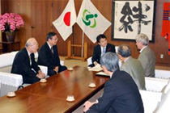

「ピースフォーラムｉｎさいたま」を開催しました
10月１日(木)、平和市民５団体(埼玉県原爆被害者協議会･埼玉県地域婦人会連合会･原水爆禁止埼玉県協議会･埼玉県平和運動センター･埼玉県生活協同組合連合会)の主催で、｢ピースフォーラムinさいたま｣を埼玉会館小ホールで開催しました。
スティーブン・リーパー氏(財･広島平和文化センター理事長)を招いた講演会に、約130人が参加しました。講演会終了後には、｢JR浦和駅西口での核兵器禁止条約の締結を求める署名活動｣、リーパー氏と市民５団体の代表などでさいたま市と上尾市を訪問し｢平和市長会議への加盟要請｣を行いました。
|
■講演会概要
スティーブン・リーパー氏の講演は、「人類にとって、来年のNPT再検討会議が意味すること」として“何らかの敵が必要になる戦争文化を卒業し平和文化を育てること”“NPT(核兵器拡散防止条約)再検討会議で大きな役割を果たすのは、被爆国で平和憲法と非核三原則を持つ日本”であることなどを話しました。参加者からは、「ご自分の言葉で話され、大変いいお話でした」「今こそ行動が必要ですね」などの声をいただき好評でした。 |
|
|
■JR浦和駅西口での署名活動
平和市民５団体で呼びかけた｢核兵器禁止条約の締結を求める｣署名活動に約50人が参加し、186筆の署名協力がありました。今回の署名は、国連に提出する署名で、平和市長会議が提唱する「2020年ビジョン」に基づき、2010年までに核兵器禁止条約の締結、2020年までに全ての核兵器の解体、核兵器の廃絶に向けた交渉義務を果たすことを求めています。時間は、12時から12時45分と短時間でしたが、参加者は、大きな声で署名への協力を呼びかけました。 |
|
|
■さいたま市と上尾市に平和市長会議への加盟要請 スティーブン･リーパー氏と平和市民５団体の代表などで、さいたま市と上尾市を訪問し、平和市長会議への加盟要請を行いました。さいたま市では清水市長様、上尾市では後藤副市長様に対応していただきました。秋葉広島市長の要請書を手渡し、要請と懇談を行いました。懇談では、核廃絶の話題以外に、埼玉の原爆死没者慰霊式や原爆症認定集団訴訟などが話題になりました。  |